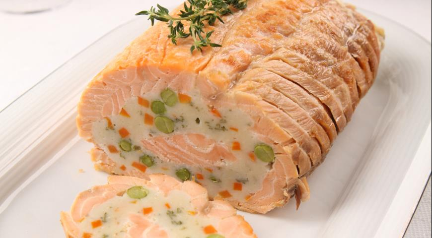
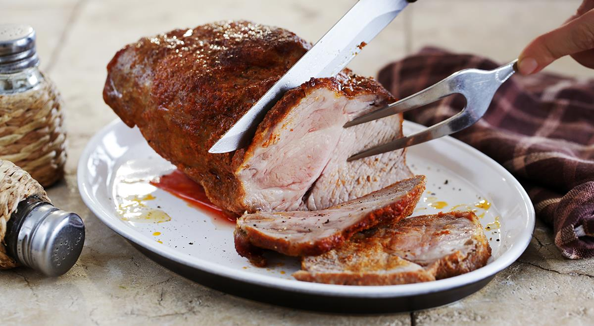
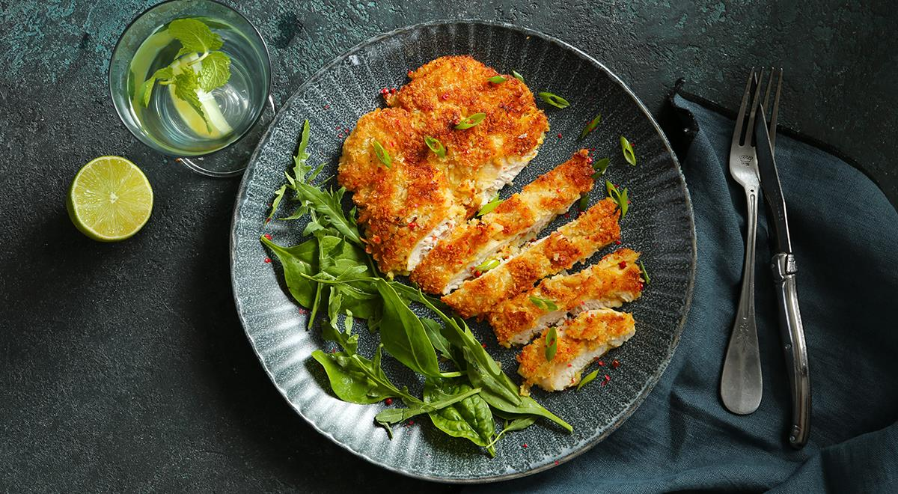
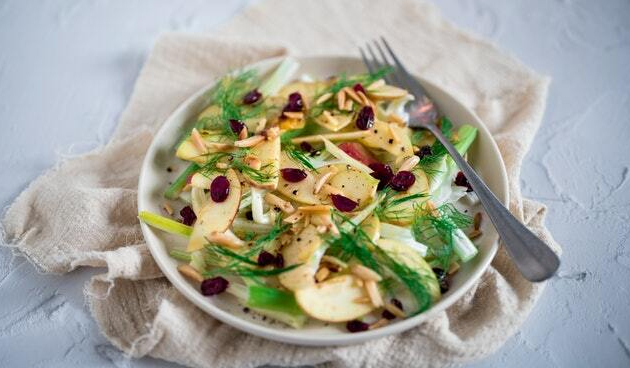
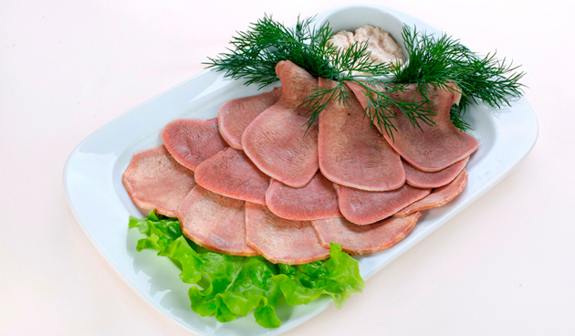
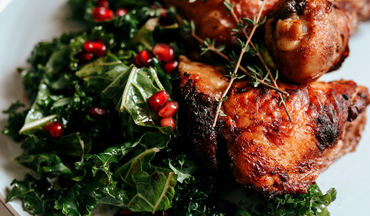
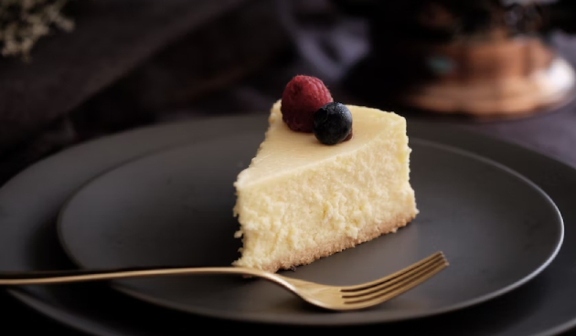
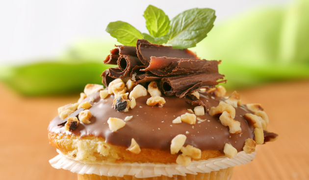

Новогоднее меню 2023
- Основное блюдо
- Праздничный рулет из лосося

- Свинина в рукаве целиком

- Отбивные из индейки

- Салаты
- Салат с курицей и ананасами

- Салат с креветками, рукколой и помидорами черри

- Закуски
- «Острый язычок»

- Перепелки на шпажках

- Десерты
- Творожный Чизкейк

- Шоколадные с кремом
